from pathlib import Path
import torch
import matplotlib.pyplot as plt
plt.rcParams["savefig.bbox"] = 'tight'
# download helpers from https://github.com/TheSecondStep/Quarto-Blog/tree/main/posts/%E5%9B%BE%E5%83%8F%E5%88%86%E7%B1%BB%E4%BB%BB%E5%8A%A1%E6%95%B0%E6%8D%AE%E5%A2%9E%E5%BC%BA%E5%8F%AF%E8%A7%86%E5%8C%96
from helpers import plot, show_one
from torchvision.transforms import v2
from fastai.vision.all import PILImage, ToTensor基于torchvision.transforms v2，通过一张宝可梦风格的图片对图像变换的直观演示
torch.manual_seed(42)<torch._C.Generator at 0x27ea4e6af30>img = PILImage.create(Path('./images/rabbit.jpg').resolve())
img = PILImage.create(img.resize((512, 512)))tfms = ToTensor()
img_t = tfms(img)print(f"{type(img_t) = }, {img_t.dtype = }, {img_t.shape = }")type(img_t) = <class 'fastai.torch_core.TensorImage'>, img_t.dtype = torch.uint8, img_t.shape = torch.Size([3, 512, 512])v2.Resize
tfms = v2.Resize(size=(224, 224))
out = tfms(img)show_one(img), show_one(out)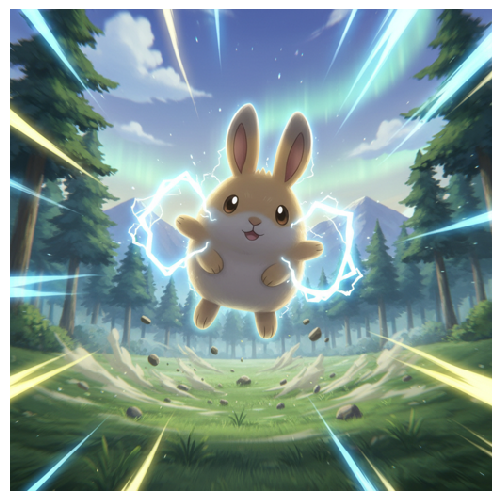
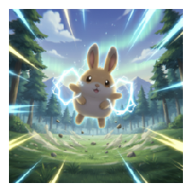
v2.RandomCrop
tfms = v2.RandomCrop(size=(224, 224))
out = tfms(img)
plot([img, out])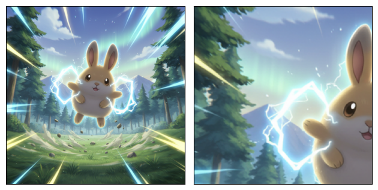
v2.CenterCrop
tfms = v2.CenterCrop(size=224)
out = tfms(img)
plot([img, out])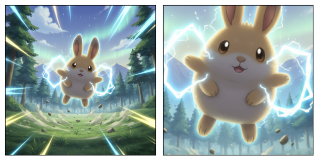
v2.RandomResizedCrop
tfms = v2.RandomResizedCrop(size=(224, 224), scale=(0.08, 1), ratio=(3/4, 4/3))
out = tfms(img)
plot([img, out])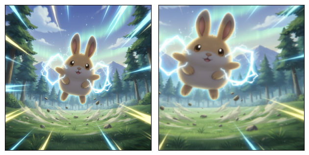
v2.RandomHorizontalFlip
tfms = v2.RandomHorizontalFlip(p=1)
out = tfms(img)
plot([img, out])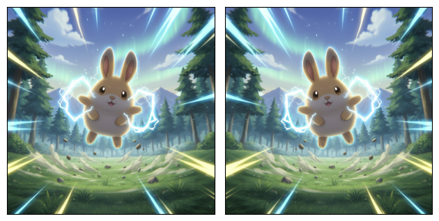
v2.RandomVerticalFlip
tfms = v2.RandomVerticalFlip(p=1)
out = tfms(img)
plot([img, out])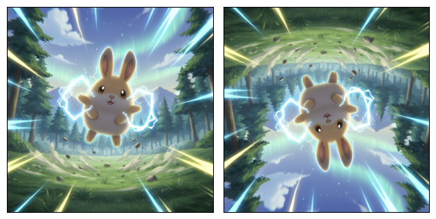
v2.Pad
tfms = v2.Pad(padding=20, padding_mode='constant')
out = tfms(img)
plot([img, out])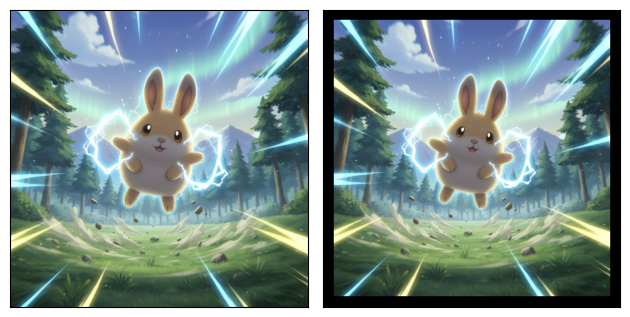
v2.RandomRotation
tfms = v2.RandomRotation(degrees=10)
out = tfms(img)
plot([img, out])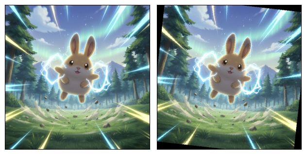
v2.ColorJitter
- brightness：亮度
- contrast：对比度
- saturation：饱和度
- hue：色相
# 亮度
tfms = v2.ColorJitter(brightness=0.5)
out = tfms(img)
plot([img, out])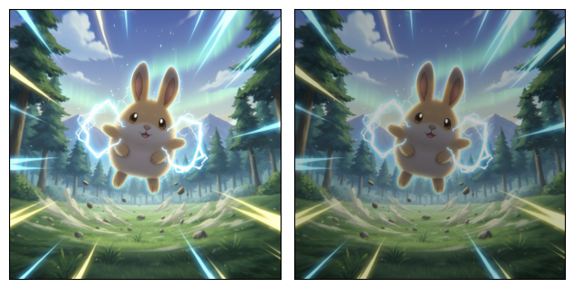
# 对比度
tfms = v2.ColorJitter(brightness=0.5, contrast=0.5)
out = tfms(img)
plot([img, out])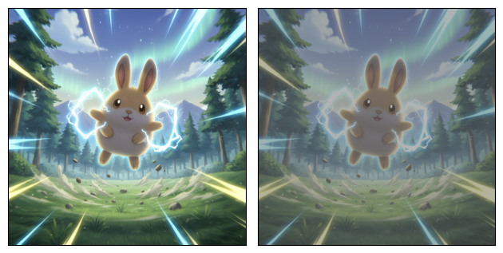
tfms = v2.ColorJitter(brightness=0.5, contrast=0.5, saturation=0.5)
out = tfms(img)
plot([img, out])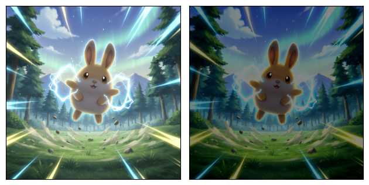
tfms = v2.ColorJitter(brightness=0.5, contrast=0.5, saturation=0.5, hue=0.5)
out = tfms(img)
plot([img, out])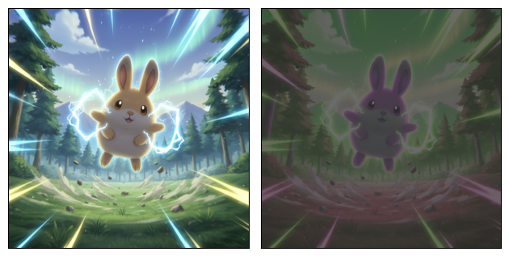
v2.RandAugment
tfms = v2.RandAugment()
out = tfms(img)
plot([img, out])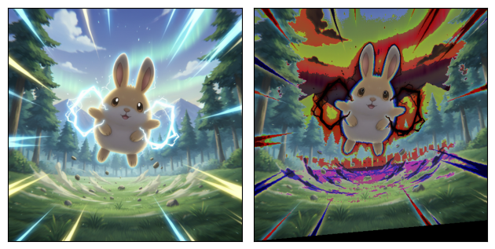
tfms = v2.RandAugment()
out = tfms(img)
plot([img, out])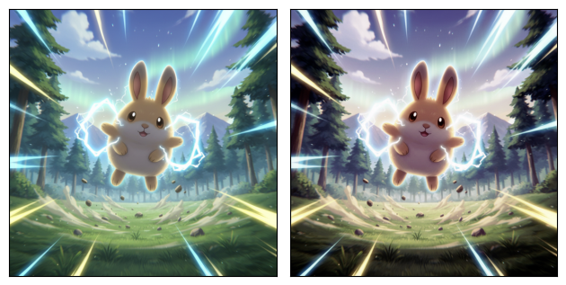
v2.Compose
transforms = v2.Compose([
v2.RandomResizedCrop(size=(224, 224), antialias=True),
v2.RandomHorizontalFlip(p=0.5),
v2.PILToTensor(),
v2.ToDtype(torch.float32, scale=True),
v2.Normalize(mean=[0.485, 0.456, 0.406], std=[0.229, 0.224, 0.225]),
])
out = transforms(img)outtensor([[[-0.2684, -0.3027, -0.2856, ..., -0.3198, -0.3883, -0.4397],
[-0.2513, -0.2513, -0.2513, ..., -0.3369, -0.3883, -0.4054],
[-0.2342, -0.2342, -0.2513, ..., -0.3369, -0.3712, -0.3883],
...,
[ 0.8447, 1.3584, 1.7009, ..., 0.6049, 0.5878, 0.5536],
[-0.2684, -0.0801, 0.1597, ..., 0.5364, 0.5193, 0.5364],
[-0.3712, -0.2684, -0.1486, ..., 0.5022, 0.5193, 0.5364]],
[[ 0.4153, 0.3803, 0.3803, ..., 0.1877, 0.1702, 0.1352],
[ 0.4328, 0.4153, 0.3978, ..., 0.1877, 0.1702, 0.1702],
[ 0.4678, 0.4503, 0.4503, ..., 0.2052, 0.2052, 0.1877],
...,
[ 1.9909, 2.2185, 2.3060, ..., 1.8158, 1.7983, 1.7808],
[ 1.3957, 1.6408, 1.8158, ..., 1.6933, 1.7108, 1.6933],
[ 1.2031, 1.4482, 1.6583, ..., 1.6408, 1.6583, 1.6232]],
[[ 1.4200, 1.4025, 1.4200, ..., 1.3677, 1.3502, 1.3502],
[ 1.4374, 1.4374, 1.4374, ..., 1.3851, 1.3502, 1.3502],
[ 1.4548, 1.4722, 1.4548, ..., 1.3502, 1.3328, 1.3502],
...,
[ 2.3960, 2.4831, 2.5354, ..., 2.4483, 2.4483, 2.4483],
[ 2.1520, 2.2566, 2.3611, ..., 2.3437, 2.3611, 2.3786],
[ 2.1346, 2.2566, 2.3611, ..., 2.2914, 2.2914, 2.3088]]])